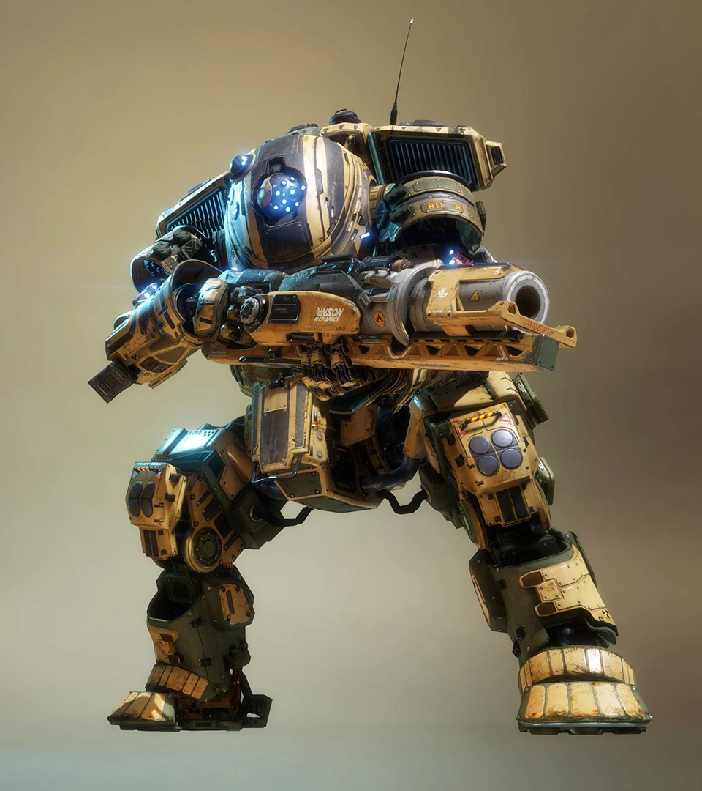

Scorch

A Scorch a területuralásra és a gyújtófegyverekre specializálódott. Tűzfalával és gyújtógránátvetőjével képes nagy területeket lángba borítani. Robusztus felépítése és Lángmagja pusztítóvá teszi a közeli harcokban.